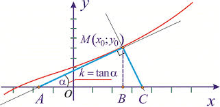
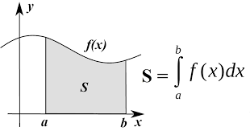

Що таке похідна?
Похідна — це математичне поняття, яке показує, як швидко змінюється функція залежно від зміни її аргументу. Іншими словами, похідна описує швидкість зміни величини.
Наприклад, якщо функція описує шлях автомобіля залежно від часу, то похідна показує миттєву швидкість автомобіля у конкретний момент.
У геометричному сенсі похідна пов’язана з нахилом дотичної до графіка функції.

Рис.1 Геометричний зміст похідної
Що таке інтеграл?
Інтеграл — це поняття, яке дозволяє знайти сумарний результат безперервної зміни.
Якщо похідна відповідає на питання "як швидко змінюється?", то інтеграл відповідає на питання "який загальний результат?".
Інтеграл можна уявити як площу під графіком функції.

Рис.2 Геометричний зміст інтеграла
Зв’язок між похідною та інтегралом
Похідна та інтеграл є взаємно оберненими операціями.
Якщо знайти інтеграл функції, а потім взяти похідну, ми знову отримаємо початкову функцію.
Саме тому ці поняття лежать в основі математичного аналізу, фізики, інженерії та економіки.